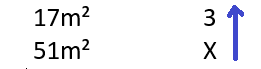
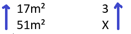
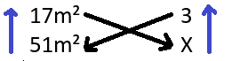
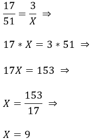
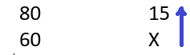
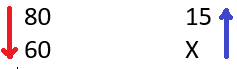
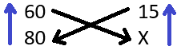
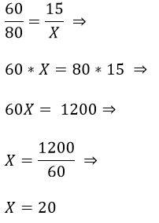

Regra de três simples permite encontrar um quarto valor que não conhecemos em um problema, dos quais conhecemos apenas três deles. Assim, encontraremos o valor desconhecido a partir dos três já conhecidos.
Veja os passos para montar o problema e resolver facilmente:
- Crie uma tabela e agrupe as grandezas da mesma espécie na mesma coluna.
- Identificar se as grandezas são inversamente ou diretamente proporcionais, analisaremos isso no próximo passo.
- Montar a equação assim: se as grandezas forem diretamente proporcionais, multiplicamos os valores em cruz, isto é, em forma de X. Se as grandezas forem inversamente proporcionais, invertemos os valores para ficarem diretamente proporcional.
- Resolva a equação.
Regra de três simples direta:
Quando temos duas grandezas diretamente proporcionais, ou seja, quando a variação de um deles é semelhante a variação no outro, aumentando ou diminuindo.
Exemplo:
Exercícios resolvidos de regra de três simples direta:
1) Para se construir um muro de 17m² são necessários 3 trabalhadores. Quantos trabalhadores serão necessários para construir um muro de 51m²?
| a) 6 | b) 8 | c) 9 | d) 10 | e) 12 |
|---|
Há duas grandezas envolvidas (área do muro e número de trabalhadores) e temos três valores conhecidos; portanto, trata-se de um problema de regra de três simples.
Precisamos encontrar o número de trabalhadores para construir 51m². Para isso, vamos armar o problema para descobrir se temos uma regra de três simples direta ou inversa:
Solução: montando a tabela e agrupando as grandezas de mesma espécie na mesma coluna.
| Área | Nº de trabalhadores |
|---|---|
| 17m² | 3 |
| 51m² | X |
Inicialmente, coloquemos uma seta orientada no sentido contrário do X, isto é, para cima. Colocaremos na outra grandeza uma seta de mesmo sentido, caso as grandezas sejam diretamente proporcionais, ou uma seta de sentido contrário, se as grandezas forem inversamente proporcionais.

Perceba que a outra seta terá o mesmo sentido, já que as grandezas são diretamente proporcionais (se aumentarmos a área do muro, devemos aumentar o número de trabalhadores):

Como se trata de uma regra de três simples direta, multiplicamos os valores em cruz, isto é, em X, assim:

Logo, montando a equação:

Portanto, serão necessários 9 trabalhadores para construir um muro de 51m².
Resposta: C
Regra de três simples inversa:
Quando temos duas grandezas inversamente proporcionais, ou seja, quando a variação de uma delas é contrária a variação no outro, quando um aumenta o outro diminui e vice-versa.
Exemplo:
Exercícios resolvidos de regra de três simples inversa:
2) Um automóvel com velocidade de 80 km/h gasta 15 minutos em certo percurso. Se a velocidade for reduzida para 60 km/h, que tempo, em minutos, será gasto no mesmo percurso?
| a) 10 | b) 12 | c) 18 | d) 20 | e) 24 |
|---|
Solução: montando a tabela e agrupando as grandezas de mesma espécie na mesma coluna.
| Velocidade | Tempo |
|---|---|
| 80 km/h | 15 min. |
| 60 km/h | X min. |
Inicialmente, vamos colocar uma seta orientada no sentido contrário do X, isto é, para cima.

Temos uma regra de três simples inversa, a seta terá sentido contrário (se diminuímos a velocidade, o tempo do percurso aumenta).

Como se trata de uma regra de três simples inversa, devemos inverter os valores no sentido da seta, assim transformamos em uma regra de três simples direta e então podemos multiplicar em cruz (em X):

Logo, montando a equação:

Portanto, será gasto um tempo de 20 minutos para fazer o mesmo percurso a 60 quilômetro por hora.
Resposta: D
O intuito é facilitar o entendimento sobre regra de três simples, mostrando os passos. Se gostou, curte aí ! 😉
Bons estudos e boa sorte!
Estude também